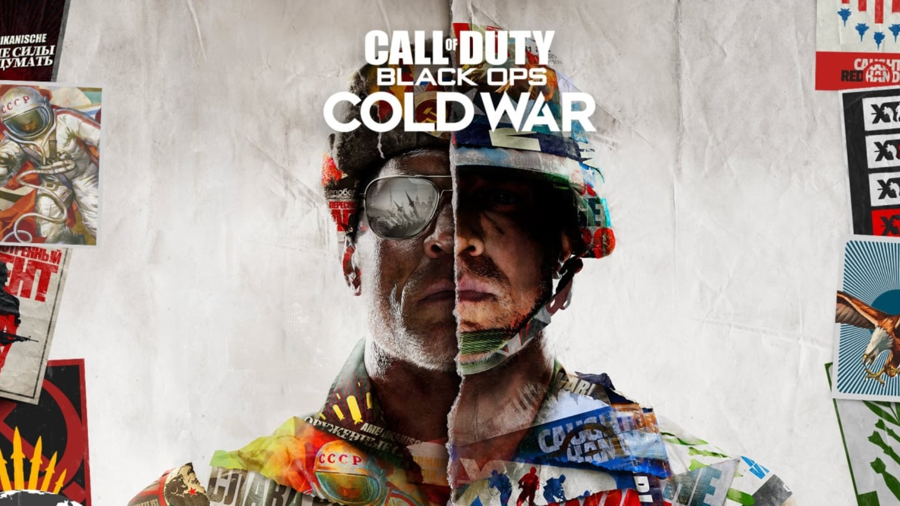

Call of Duty: Black Ops Cold War
A Financial Juggernaut in Gaming

The release of Call of Duty: Black Ops Cold War in 2020 marked a significant milestone in gaming history,
not only for its content but also for its staggering production cost. With an estimated budget exceeding
$700 million, this title is among the most expensive games ever created.
Scroll down to read more.
The Escalation of Game Development Costs
The video game industry has grown exponentially over the last few decades, transitioning from small-scale projects created by minimal teams to massive productions requiring hundreds of professionals. Early video games were relatively inexpensive to produce, as they relied on simpler graphics, limited gameplay features, and basic sound design. In contrast, modern games demand cutting-edge technology, immersive storytelling, and top-tier graphics to meet the expectations of increasingly sophisticated audiences. In the case of Black Ops Cold War, these escalating expectations played a significant role in driving up costs. Players now demand hyper-realistic visuals, expansive multiplayer environments, and engaging campaigns. Meeting these demands requires investments in advanced technology, skilled talent, and significant time, all of which contributed to the enormous budget of this title.Factors Behind the $700 Million Budget
The development budget for Black Ops Cold War was allocated across multiple areas essential to creating a game of this scale and quality. A significant portion of the budget went into research and development, as the game's narrative is rooted in the Cold War era. Developers conducted meticulous historical research to ensure authenticity in both storylines and game environments. Moreover, the game's cutting-edge graphics and gameplay technology contributed substantially to its cost. Technologies like photogrammetry and real-time ray tracing were utilized to create hyper-realistic visuals, but their implementation required both expensive software tools and a highly skilled workforce. Another critical expense was talent acquisition. The development team included not only programmers and artists but also professional writers, voice actors, and motion-capture specialists, all of whom commanded premium fees for their expertise. In addition to initial development, the game’s lifecycle costs included post-launch support. Modern games, especially those as ambitious as Call of Duty, require continuous updates, bug fixes, and new content to maintain player engagement. These post-release expenditures further inflated the overall budget.A High-Cost Industry Trend
The enormous cost of Black Ops Cold War is not an anomaly but part of a broader trend in the gaming industry. Over the years, the budgets of AAA games have risen significantly. For instance, Call of Duty: Modern Warfare (2019) reportedly cost $640 million to produce, while Call of Duty: Black Ops 3 (2015) was created with a $450 million budget. This upward trajectory reflects the increasing ambition of game developers and the demand for high-quality experiences from gamers worldwide. These figures are comparable to or even exceed the budgets of blockbuster films. Games like Red Dead Redemption 2 and Cyberpunk 2077 also pushed production budgets into the hundreds of millions, highlighting how video games have become not only a form of entertainment but also cultural phenomena with massive economic footprints.Implications for the Gaming Industry
The rising costs of game production have far-reaching implications. One of the most significant challenges is the necessity of achieving massive sales to ensure profitability. High production costs mean developers and publishers are under pressure to maximize revenue through pre-orders, premium editions, and downloadable content. This can lead to aggressive marketing campaigns and a reliance on established franchises to mitigate financial risk. Smaller game studios often struggle to compete with the resources of industry giants like Activision. This dynamic has led to an era of consolidation in the gaming industry, with mergers and acquisitions becoming increasingly common as companies seek to pool resources and expertise. Another consequence of high production costs is a growing tension between innovation and risk aversion. While large budgets enable the development of groundbreaking technology and storytelling, they also discourage experimentation. Publishers are more likely to invest in sequels or spin-offs of proven franchises rather than take chances on original ideas.Advanced Technology: A Double-Edged Sword
The role of advanced technology in modern game development cannot be understated. In Black Ops Cold War, real-time ray tracing created realistic lighting and shadow effects, while photogrammetry allowed developers to replicate real-world textures with astonishing accuracy. However, these advancements come at a price. They require not only substantial financial investment but also a longer development timeline, as teams must refine and optimize these technologies for use in-game. While these innovations elevate the gaming experience, they also contribute to the ballooning budgets seen across the industry. As technology continues to advance, developers will face the ongoing challenge of balancing innovation with financial feasibility.Conclusion
Call of Duty: Black Ops Cold War exemplifies the monumental investments required to create a modern AAA video game. Its $700 million budget reflects the industry's growing ambition to deliver immersive, visually stunning, and engaging experiences to players. However, these rising costs present challenges, including the need for massive sales, a shift towards established franchises, and the financial risks associated with advanced technology. As the gaming industry continues to evolve, it must navigate the delicate balance between pushing the boundaries of creativity and maintaining economic sustainability. Black Ops Cold War stands as both a triumph of modern game development and a reminder of the immense resources required to achieve such heights.